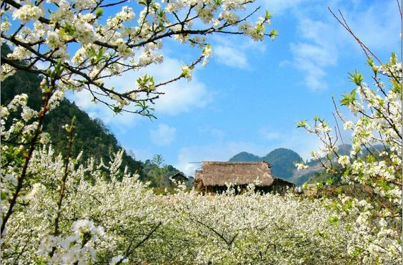
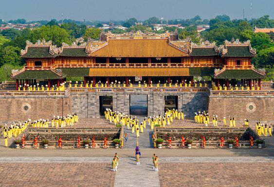

Vùng Trung du và miền núi Bắc Bộ là nơi hội tụ đầy đủ nhiều tiềm năng du lịch đặc sắc, mang đậm các đặc trưng cơ bản về đất nước và con người Việt Nam. Nhiều điểm du lịch nổi tiếng như Đền Hùng, Điện Biên, Sa Pa, Ba Bể, Bản Giốc, ...đã và đang là điểm đến hấp dẫn của du khách trong và ngoài nước.
Theo Tiến sĩ Phạm Quang Tiến, Viện Khoa học và Giáo dục Việt Nam: Vùng Trung du và miền núi Bắc Bộ có những nét riêng biệt không hề có ở các vùng lãnh thổ khác trên đất nước ta. Vùng này bao gồm nhiều dãy núi trùng điệp, hùng vĩ như dãy núi Hoàng Liên Sơn được mệnh danh là "mái nhà của Đông Dương", với đỉnh cao nhất là Phanxipang 3.142m và hàng chục đỉnh núi khác có độ cao trên dưới 3.000m. Những dãy núi nơi đây có đặc điểm bị chia cắt rất mạnh và có tính phân bậc, vì thế tạo nên nhiều cảnh quan đẹp và di tích tự nhiên bao gồm các thác nước, những thung lũng mở rộng và vực thẳm. Ngoài Sa Pa là thị trấn du lịch nổi tiếng nằm ở độ cao 1.500m thuộc tỉnh Lào Cai, các địa danh khác như cao nguyên Mẫu Sơn (Lạng Sơn), Đồng Văn, Quảng Bạ (Hà Giang), Bắc Hà (Lào Cai), Mộc Châu (Sơn La)...được ví như bức tranh tuyệt tác vừa hùng vĩ, vừa thơ mộng của núi rừng, có đầy đủ mọi điều kiện tự nhiên thuận lợi để xây dựng các khu du lịch miền núi.
Bên cạnh đó, vùng Trung du và miền núi Bắc Bộ còn có những rừng cọ, đồi chè, vườn cây ăn quả, những đỉnh đồi lượn sóng theo thung lũng và cánh đồng ngát xanh men theo các dòng sông đỏ nặng phù sa, tạo nên một cảnh sắc thân thuộc gắn liền với lịch sử dựng nước của dân tộc Việt Nam. Bằng vẻ hùng vĩ cộng với không gian khoáng đạt, cảnh vật tĩnh mịch, êm đềm và môi trường trong lành, vùng này đã tạo nên những ấn tượng mạnh mẽ và cảm xúc sâu đậm cho mọi du khách.
Mặt khác, nơi đây còn có thêm những hệ thống hang động của địa hình Kasxto thuộc vùng núi đá vôi. Các nhà khoa học đã phát hiện hơn 20 hang có giá trị khảo cổ Thời kỳ đồ đá, tập trung chủ yếu ở các tỉnh Lạng Sơn, Lai Châu và Hòa Bình. Ngoài giá trị thiên nhiên, các hang động này còn có các sự tích hoặc gắn với các sự kiện lịch sử như Hang Pắc Bó (Cao Bằng). Du lịch sinh thái tập trung chủ yếu ở các vườn quốc gia, khu bảo tồn thiên nhiên vốn rất phong phú gồm 49 khu bảo tồn tự nhiên, 5 vườn quốc gia và 20 khu rừng văn hóa-lịch sử-môi trường, với những danh lam thắng cảnh hồ Ba Bể, hồ Núi Cốc, hồ Thác Bà, lòng hồ sông Đà, Thác Bản Giốc, Thác Bạc...
Đặc biệt, vùng Trung du và miền núi Bắc Bộ rất có ý nghĩa về lịch sử cội nguồn. Nhiều di tích gắn bó với truyền thuyết và lịch sử dân tộc như Đền Mẫu Âu Cơ, Đền Hùng (Phú Thọ); di tích lịch sử gắn với từng giai đoạn cách mạng như Hang Pắc Bó (Cao Bằng), Cây đa Tân Trào và An toàn khu ở Tuyên Quang, Di tích lịch sử Điện Biên Phủ...đang tạo điều kiện cho đồng bào các dân tộc trên vùng đất này phát triển mạnh về du lịch để xóa nghèo vươn lên làm giàu bền vững.
Không những thế, vùng đất này còn có nhiều di tích lịch sử gắn liền với truyền thống văn hóa và quá trình đấu tranh giữ nước của dân tộc như đền Mẫu Âu Cơ, đền Hùng (Phú Thọ); hang Pắc Bó (Cao Bằng); Cây đa Tân Trào, An toàn khu (Tuyên Quang); Di tích lịch sử chiến thắng Điện Biên Phủ (Điện Biên)... Đặc biệt, các dân tộc sinh sống nơi đây còn lưu giữ và bảo tồn nền văn hóa lâu đời với nhiều lễ hội truyền thống độc đáo như hội Lồng Tồng, hội Gầu Tào, hội xuống đồng, hội xòe…; các điệu múa đặc sắc như múa khèn, múa sạp, hát then, hát lượn… cùng nhiều trò chơi dân gian hấp dẫn. Tất cả sẽ mang lại cho du khách nhiều trải nghiệm thú vị.

MIỀN NÚI PHÍA BẮC (7 Ngày 6 đêm)

DU LỊCH MỘC CHÂU - KIM BÔI (HÒA BÌNH) (2 NGÀY 1 ĐÊM)

DU LICH TAY BAC: MAI CHÂU - SƠN LA - ĐIỆN BIÊN (5 Ngày 4 đêm)

DU LỊCH MAI CHÂU - BẢN LÁC (2 NGÀY 1 ĐÊM)

DU LICH YEN BAI: SUỐI GIÀNG - MÙ CANG CHẢI (3 NGÀY 2 ĐÊM)

DU LICH TAY BAC: MAI CHÂU - SƠN LA - ĐIỆN BIÊN (4 Ngày 3 đêm)